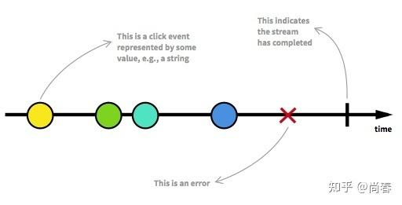
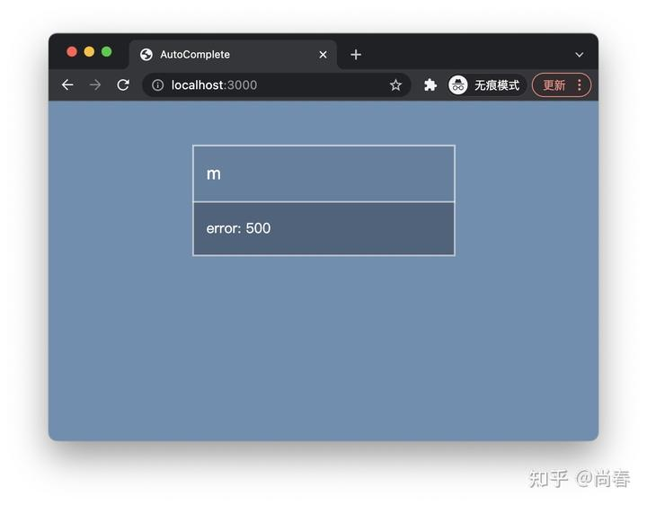
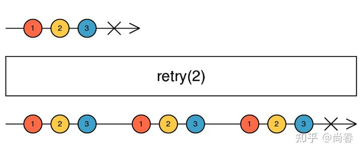
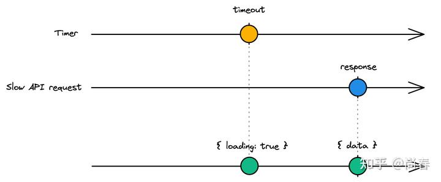
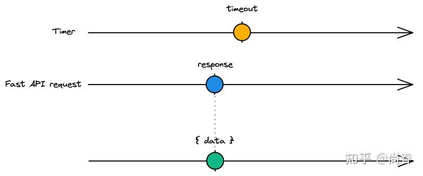

前端中的 Functional Reactive Programming（二）- 进阶版 AutoComplete
在上一篇文章尚春：前端中的 Functional Reactive Programming末尾我们挖了个坑，提出在基于 RxJS 的自动补全实现基础上，怎么样添加如下功能以进一步提升体验：
- 失败信息提示
- 失败重试，最多重试 2 次，且在新数据到来时取消之前的重试
- 添加加载提示，且如果请求完成时间小于 200ms 时不显示
- 缓存后端返回结果，可考虑 LRU 等方案
- 其它你能想象到的改进
可能有的小伙伴已经完成了部分挑战，这篇文章让我们一起填坑吧。
友情提示：本文依赖一些之前的背景知识，建议新朋友先看下上篇文章： 尚春：前端中的 Functional Reactive Programming
错误信息展示
一个显而易见的改进是：在网络出现问题或者搜索字符包含非法字符的情况下展示错误信息，有效传达相关进展给用户。
前文中我们提到，一个 Observable 的结果状态有成功（complete）和失败（error）两种：

基于之前的 RxJS 版本 AutoComplete 实现，我们先来改进下请求数据的部分：
1 | // Observable from API response |
主要改动如下：
- 根据
response.ok判断后端请求是否成功，相比之前简单依赖fetch来判断请求成功更准确些 - 在
response.ok为false时调用 RxJS 的 throwError 运算符抛出封装了错误信息的 Observable - 调用 catchError 运算符来捕获失败 Observable 的错误消息，并包装为
{ error }的形式方便后续 UI 逻辑统一处理
在 UI 方面也需要根据新的 Observable 结果稍作调整：
1 | // Subscribe and print |
如上，主要的改动是在result.error存在的情况下展示错误信息，效果如图：

源代码及试用参见 CodeSandbox： https://codesandbox.io/s/rxjs-autocomplete-error-handling-8spl4h?file=/src/index.js
出于演示目的，目前我们在错误信息中仅展示了服务端状态码，可以根据实际情况调整。
通过这一改进，我们可以看出 Observable 对错误情况有足够的支持，包括使用throwError将错误信息封装为 Observable、使用catchError捕获 Observable 源中的错误等。
失败重试
在数据请求失败时仅仅展示错误信息仍然不够完美，有时候错误是因为网络不稳定，或者其它临时发生的各种状况导致，这些情况下我们更希望可以由程序自动进行重试，而不是让用户自己完成。
众所周知，基于 Promise 的原生fetch方法本身并不支持重试，需要借助类似 fetch-retry 等第三方库解决。RxJS 则提供了多种失败重试机制，方便对出现错误的 Observable 进行适宜的处理。
为了在 AutoComplete 中支持失败重试，我们首先需要改造下如下部分的代码：
1 | return from(fetch(`/people?keyword=${value}`)).pipe(...); |
这段代码的一个问题是：fetch(/people?keyword=${value}``作为一个函数调用，在作为实参传给from 时已经变成了一个处理中的 Promise，由于 Promise 开弓没有回头箭，它是无法进行重试的。
Observable 和 Promise 的核心区别之一是 Observable 默认是懒执行的，直到有下游 subscribe 才会触发。因此，改造的核心思路就是将fetch调用进一步封装，放到 Observable 创建函数体中：
1 | const request = new Observable((observer) => { |
RxJS 提供的 retry 操作符，能够在错误发生的时候，通过重新 subscribe 源 Observable 进行重试：

接下来，让我们把retry添加到搜索请求逻辑中吧：
1 | // Observable from API response |
条件重试
除了retry操作符，RxJS 还提供了更为强大的 retryWhen 操作符，用于处理更复杂的自定义条件重试。譬如，如果我们只希望在出现请求超时的情况下进行失败重试，则可将retry部分改为如下逻辑：
1 | // Retry only when timeout error happens |
源代码参见 CodeSandbox： https://codesandbox.io/s/rxjs-autocomplete-retry-rmcq6o?file=/src/index.js
加载提示
标准的加载提示非常简单，但不够精雕细琢。我们在这个环节希望给 AutoComplete 加一个这样的 loading 效果：
- 如果请求完成时间小于 200ms 时不显示 loading
- 否则显示 loading 直到请求完成
下面是用 RxJS 惯用的弹珠图分别展示请求比较慢和比较快两种情形：

请求较慢时，展示 loading 效果
请求较快时，直接展示结果为了实现图示的效果，我们首先创建一个 Timer 的 Observable：
1 | const loadingTimer = timer(200).pipe( |
上述代码涉及几个运算符，这里详细介绍下：
timer(200)创建一个 Observable，其会在 200ms 后发送一个数字 0mapTo运算符是map运算符的一个简化版本，将 Obervable 封装的数据转化为另一种数据，这里等同于map(_ => ({ loading: true }))startWith运算符可以在下游 subscribe 的时候立即发送一个数据，用以进行初始化takeUntil是一个过滤型的运算符，在request完成时，无论源 Observable 即timer(200)完成与否，都会结束这个 Observable
通过这些操作符的合作，loadingTimer完成了这样一种效果：
- 首先发送一个
{ loading: false }数据 - 如果 request 在 200ms 内完成，则直接结束
- 否则，会在 200ms 时发送一个
{ loading: true }数据并结束
此外，为了分离处理数据的逻辑和处理 loading 效果的逻辑，我们希望在 request 结束时，再发送一个{ loading: false }数据：
1 | request.pipe(mapTo({ loading: false })); |
然后，为了整合 loading 效果逻辑，我们可以使用merge运算符将这两个 Observable 合并为一个：
1 | const showLoadingIndicator = merge( |
这里有一个潜在的问题：request 作为一个 Observable，目前已经被至少两处地方使用。然而默认的 Observable 是懒执行的，每次 subscribe 都会重新执行内部逻辑。但显然我们在这几处都希望共享 request 的当前状态，而非不断进行新的独立的 API 请求。
为了达成这一效果，我们需要适当改造下 request Observable：
1 | return request.pipe( |
这里引入了 share 运算符将 request Observable 变为一个可以由多个 Subscribers 共享的 hot Observable：只要有一个 Subscriber 订阅，则后面的 Subscribers 订阅时也会继续获得第一个 Observable 的后续数据，而非重新开始。
最后一步是将 request 和 showLoadingIndicator 两个 Observables 合并：
1 | const searchByValue = (value) => { |
更新 UI 部分逻辑后，我们第一版加载信息改进就已经完成啦，效果如下：
锦上添花
前面的改进都集中在处理单个请求上，对于 AutoComplete，还需要处理用户连续输入等场景，由此引发更多值得注意的问题：
- 当现在请求还在继续，loading 信息已展示的情况下，用户输入了新的字符，是否需要继续展示 loading 信息？
- 当现在请求还在继续，loading 信息已展示的情况下，用户清除了最后的字符甚至所有字符，应当如何处理？
- 请求在 loading 信息刚刚出现时就很快完成，导致 loading 信息闪现，体验比较糟糕，应当如何处理？
这里没有简单的答案，需要针对性的进行讨论和优化。为了展示下 RxJS 解决这类复杂问题的优秀能力，我们尝试解决一下第一个问题。
假设我们的方案是：在当前请求还在进行且 loading 信息已展示的情况下，用户又输入了新的字符，继续展示 loading 信息，直到新的请求完成。
下面我们推演下整个流程：
- 第一个请求发出
- Observable 发出
{ loading: false }数据 - 200ms 后请求未完成，Observable 发出
{ loading: true }数据 - 用户输入新字符
- 第二个请求发出
- Observable 发出
{ loading: false }数据，但在这种情况下，我们不希望隐藏 loading 信息
为了达成这一效果，需要有能力对 Observable 连续产生多个值之间进行逻辑处理，即{ loading: true } 后面如果紧跟着{ loading: false }的话，则将该值舍弃或者变更为{ loading: true }。
对应到 RxJS，我们可以结合使用 startWith、pariwise和map运算符实现该逻辑：
1 | // Observable from keyup event |
源代码可以参阅 CodeSandbox： RxJS AutoComplete Loading - CodeSandbox
结语
通过上述三项改进，我们不能看出，一方面精益求精是永无止境的，只要场景足够复杂，对体验的要求足够高，我们总是可以找出更多的可以改善的地方；另一方面，也可以看出 RxJS 优异的抽象能力和丰富的工具集，能够帮我们将复杂的异步问题简单化，用为数不多的代码实现一个又一个有挑战的功能。诚然 RxJS 的门槛非常高，Observable、Subscriber、Subject 还有繁多的 operators 足够复杂，不过假以时日，经过岁月和经历的磨练，相信你也可以某种程度上掌握它的精髓。
参考文献
- Loading indication with a delay and anti-flickering in RxJS
- Rx fromPromise and retry
- What is the RxJs Retry Operator and how does it work?
- RxJS: retryWhen operator
- Understanding RxJS Multicast Operators
- Marble testing Observable Introduction
彩蛋
异步逻辑难以思考，针对异步逻辑的测试更是难上加难。为了便于开发者写出更为正确的代码，RxJS 提供了弹珠测试的方案。
该方案基于文本化表示的弹珠图，并提供了一系列便捷的 API 支持各种场景的测试需求。弹珠图类似我们前面贴出来的很多图片，但毕竟是在代码中，因此是文本化的：
1 | # emit value 'a' at 30ms, 'b' at 60ms, and complete at 90ms |
API 包括使用上述文本弹珠图创建 Observable 的cold和hot方法，以及TestScheduler、expectObservable、flush等辅助方法。
下面我们使用 jasmine-marbles 展示一些弹珠测试的示例：
1 | import { cold, getTestScheduler, hot } from 'jasmine-marbles'; |
怪不得有人感叹说：
When you need to test asynchrone code, Marble testing can be an elegant way to test it. It will be more visual, clearer and with less code.
Author: Chun Shang
Link: https://springuper.github.io/frontend-frp-2nd/
License: 知识共享署名-非商业性使用 4.0 国际许可协议